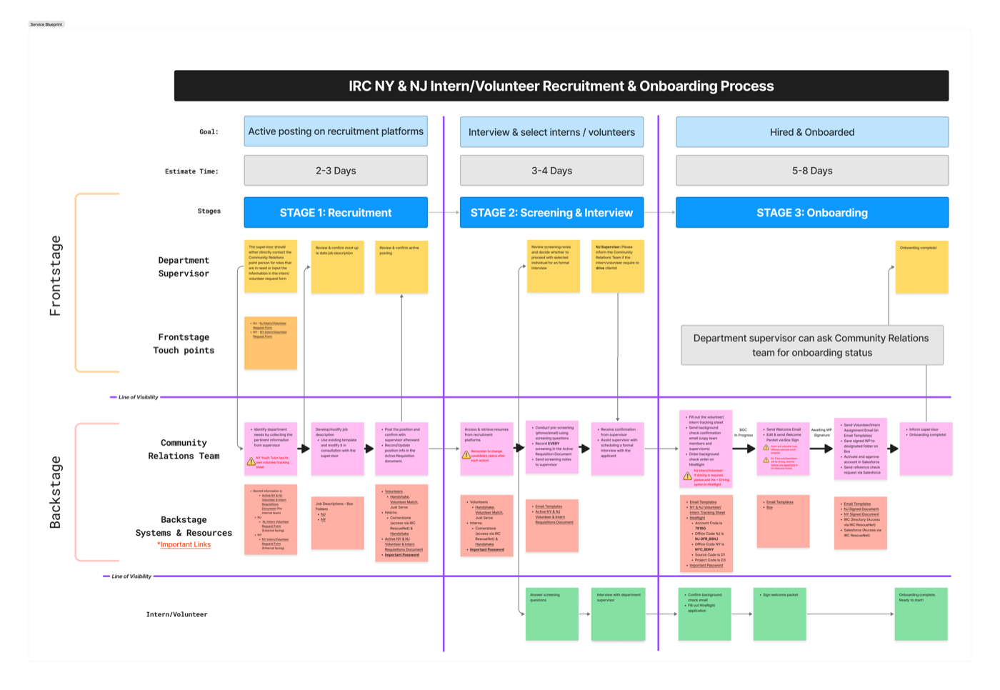

Bridging two systems: Designing for the Onboarding Experience to Kroger's Enterprise Item Management Platform
A Double Diamond process, from SME interviews to a shipped three-layer support framework, bridging fragmented legacy systems and spreadsheets to a centralized item-management platform.

Designing Bulk GTIN Search and Task Creation
Hundreds of GTINs at once, not one at a time: a bulk search flow with inline task creation for the platform's item-management workflow.

Exploring Summer in WLC Schools: A Landscape Analysis
A mixed-methods study of 18 citywide summer learning programs (observations, interviews, and surveys) built to inform a statewide funding strategy.

Evaluating & Redesigning a Gamified EdTech Solution
A redesign informed by heuristic evaluation and usability research that surfaced a broken information hierarchy and high cognitive load in a math-learning platform for middle schoolers.

Building Stronger Foundations: Research-Driven Insights into Intern Recruitment Strategy in Non-Profits
A self-initiated research project uncovering why recruitment and onboarding broke down for interns and volunteers at a nonprofit's NY & NJ offices.